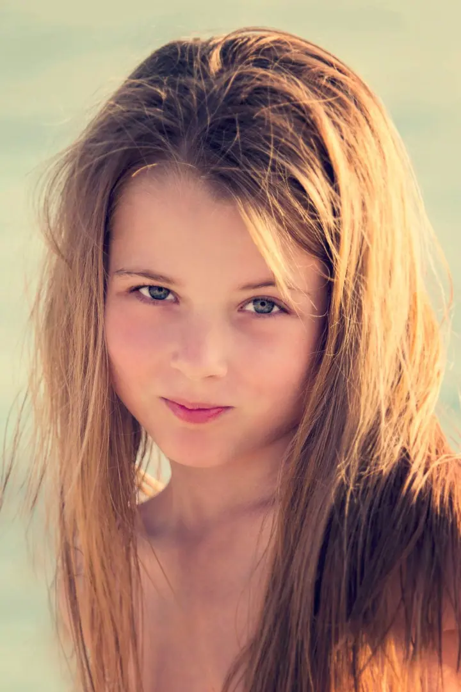
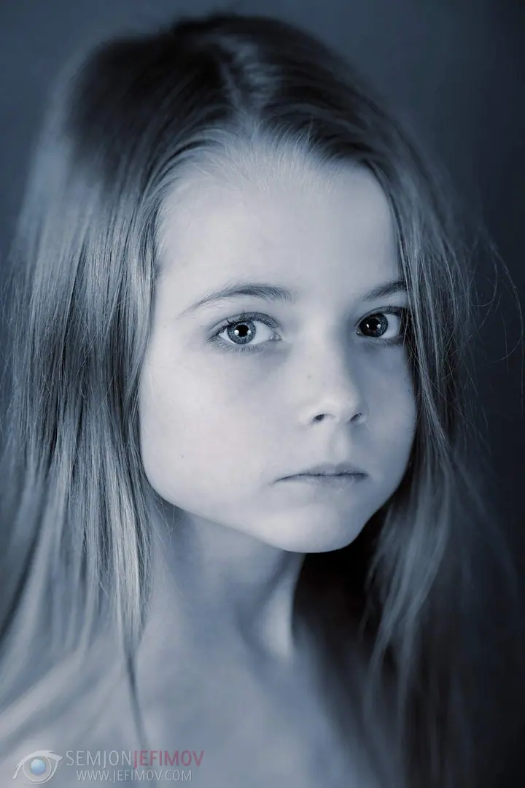
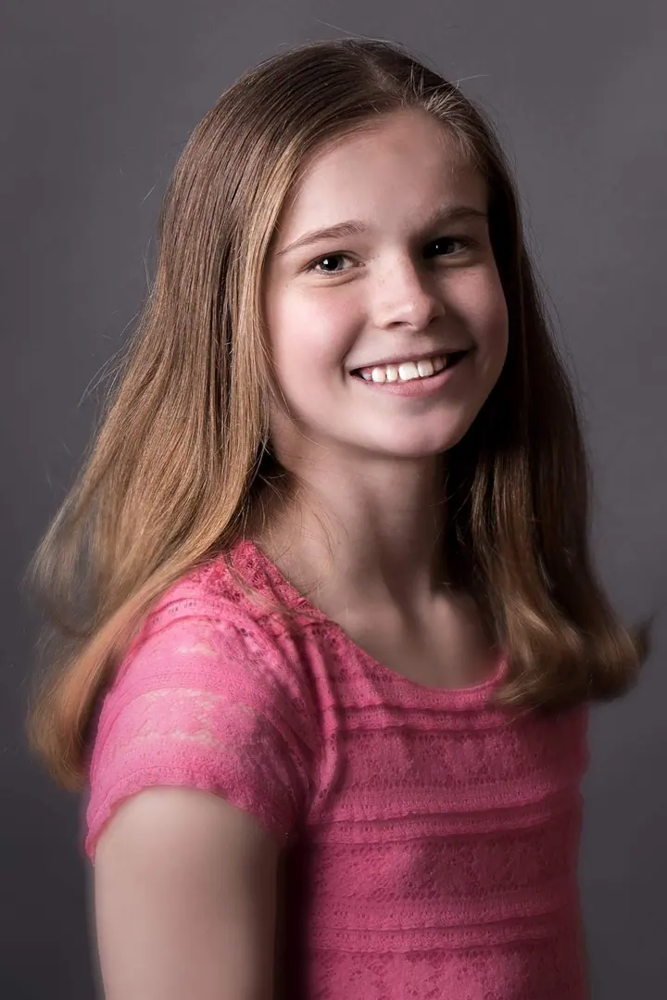
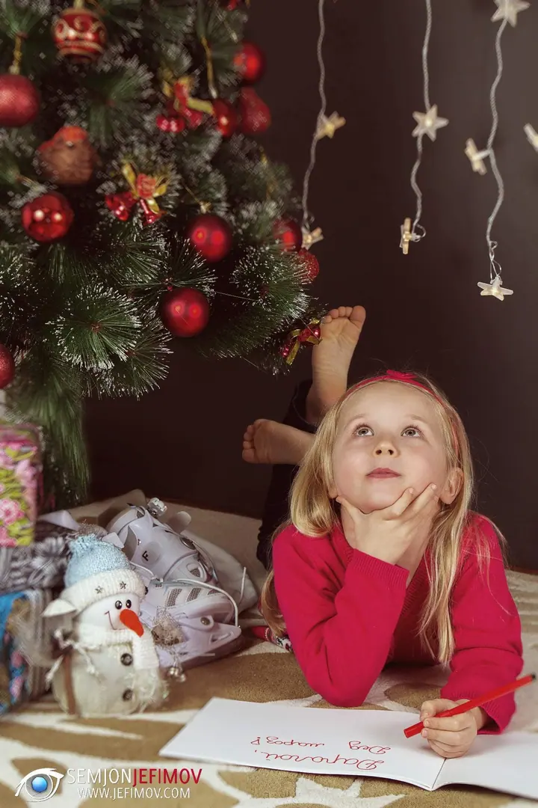
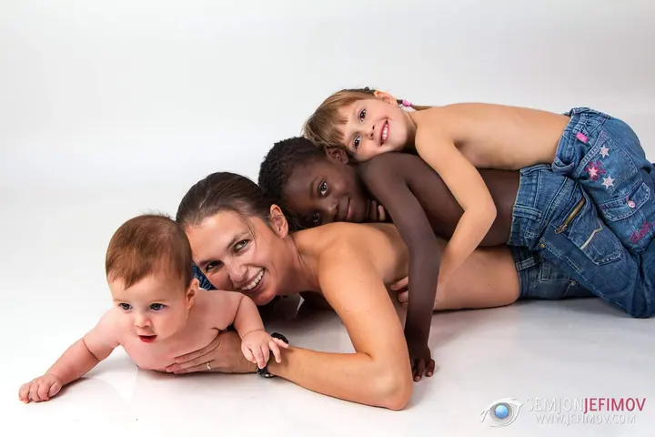
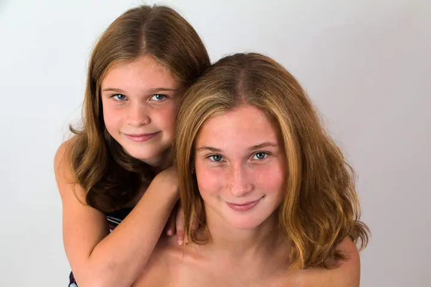

Dětské portréty
Děti nehrají role, a tak focení nejede podle scénáře. Začínáme krátkou hrou a fotím v sérii, dokud se neobjeví ta pravá jiskra v očích.





Jmenuji se Semjon Jefimov a ve svém ateliéru v Kladně fotím portréty, děti i celé rodiny. Hledám přirozený výraz bez strojených póz a nespěchám, dokud se před objektivem necítíte uvolněně.
Více o mně
„Fotografuji v sérii a hledám ten jeden snímek, ve kterém se objeví skutečná jiskra v očích.“
— Semjon Jefimov
Děti nehrají role, a tak focení nejede podle scénáře. Začínáme krátkou hrou a fotím v sérii, dokud se neobjeví ta pravá jiskra v očích.
Portréty v ateliéru i v exteriéru, od klasických až po autorské stylizace. Nespěchám a dávám vám čas, abyste se před objektivem cítili uvolněně.
Společný portrét, který ukazuje vztahy a energii mezi vámi. Můžeme také nafotit novou verzi vaší staré rodinné fotografie ve stylu „tehdy a dnes“.
Nejlépe v prvních týdnech života, kdy miminko hodně spí. Tempo focení se řídí miminkem, jeho pohodlí je vždy na prvním místě.
Fotografii se věnuji od mládí. Začínal jsem u černobílé fotografie a filmu a dlouhé hodiny jsem trávil v temné komoře. Tyhle základy ve mně zůstaly dodnes.
Dnes se soustředím na přirozené světlo, emoce a opravdové chvíle bez umělých póz. Každé focení je pro mě jiné. Nehledám jen hezký obrázek, ale atmosféru, která vystihne člověka před objektivem. Moji práci ocenil pořad České televize Černé ovce, kde jsem zvítězil s „nejkreativnější prací s modelem“.
Fotím v ateliéru v Kladně, v exteriéru, v Praze a rád za vámi přijedu i jinam. Pomohu vám s pózováním, aby fotky působily přirozeně, a upravené fotografie dostanete rychle.
Napíšete mi a společně probereme vaši představu, typ focení a místo, ať už ateliér, nebo exteriér.
Poradím vám s oblečením i s tím, jak se na focení připravit. Praktické tipy najdete také v mých radách pro focení.
Nespěchám a dávám vám čas, abyste si zvykli. S dětmi začínáme hrou, u miminek se přizpůsobím jejich rytmu.
Vyberu a citlivě upravím ty nejlepší snímky a pošlu vám je co nejdřív. Na přání je pro vás nechám i vytisknout.
Fotím ve svém ateliéru v Kladně, v exteriéru i v Praze a okolí. Po domluvě rád přijedu i na jiné místo.
Vůbec ne. Děti jsou v pohybu a já s tím počítám. Začínáme krátkou hrou a fotím v sérii, dokud nezachytím ten pravý výraz.
Ideální jsou první týdny života, kdy miminko hodně spí. Doporučuji ho před focením nakrmit a počítat s tím, že focení může trvat i několik hodin.
Samozřejmě. S pózováním vám pomohu tak, aby fotky působily přirozeně a vy jste se při focení cítili uvolněně.